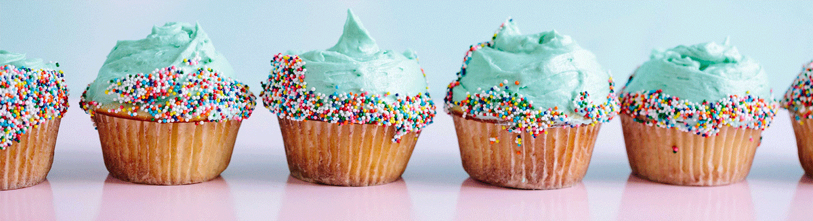

Nyeste blogginnlegg
Her er mine oppskrifter som jeg har fått lagt ut så langt. Disse er basert på hvertdagsmaten jeg selv liker å lage, samt kaker og slike ting som jeg lager til bursdager og fest! Følg med videre for å få med deg de nyeste oppskriftene, og følg meg gjerne på Instagram for mer inspirasjon på @kristinegulland og legg gjerne igjen en kommentar!